2. The Architectures of Distributed Systems
Overview
Welcome to the second unit of HIPC. In this unit, we’ll start to look at some distributed systems and analyse the architecture of these systems. We’ll cover:
- A brief history of architectural development
- Modern compute architectures
- Interconnects
- Distributed file systems
- Computational accelerators
A History of Architectural Development
When we think about computer systems, we almost always have a certain architecture in mind – The Stored-program Computer Architecture.
The Stored-Program Computer Architecture
The stored-program computer architecture was a concept conceived by Alan Turing in 1936, as a universal Turing machine. This concept was formalised by John von Neumann and others in 1945 in the First Draft of a Report on the EDVAC, and was implemented on the EDVAC in 1949.
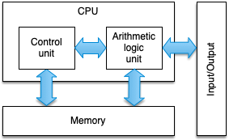
Figure 1: The von Neumann Architecture
The figure above shows a block diagram for a stored-program digital computer. Instructions are stored in main memory, from which they are read and executed by a control unit. A separate arithmetic logic unit (ALU) is responsible for performing the actual computations and manipulating the data stored in main memory. Interactions with users are enabled through input and output devices.
The von Neumann architecture is the blueprint for all mainstream computer systems today. However, there are a number of issues that still prevail today:
- Instructions and data must be continually fed to the CPU, and so the speed of the memory interface imposes a limitation on the performance.
- The architecture is inherently sequential, processing data in a SISD (single instruction stream, single data stream) fashion.
As we’ll see in the remainder of this section and unit, architectural optimisations and programming techniques have mitigated many of the adverse effects of these issues, but these issues remain limiting factors.
The First Supercomputer
For many years, following the EDVAC, computer systems used the same basic architecture, with a single CPU driving the entire system. At the time, CPUs generally ran slower than main memory, and so between fetching and executing an instruction, the main memory would be idle. It was this idle time that Seymour Cray exploited in the CDC 6600.
The CDC 6600 used a simplified CPU that was designed to run mathematical and logic operations as fast as possible. To achieve this, Cray focussed on creating a much smaller CPU, with much shorter lengths of wire (to reduce signalling delays). The result was a CPU that could run at 10 MHz (about 10 times faster than other CPUs at the time).
The central CPU was supported by a number of peripheral processors that handled input and output, as well as managing data transfers to main memory. These I/O operations and data transfers could essentially be performed for free in terms of central processing time.
Vector Architectures
In 1976, the Cray-1 was released, featuring a number of architectural optimisations that shaped the next 15 years of supercomputing. While typical von Neumann architectures were SISD, the Cray-1 was the first successful implementation of a vector processor (i.e. SIMD).
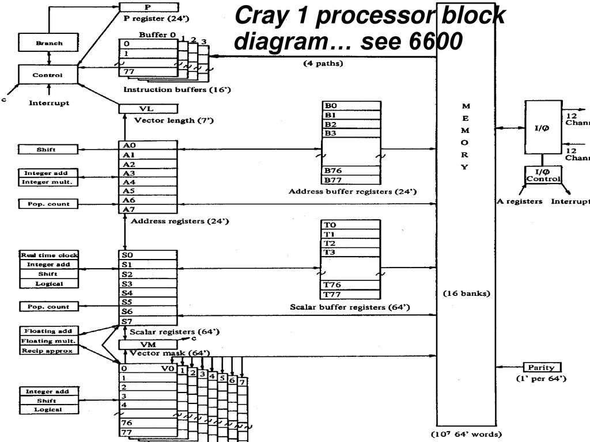
Figure 2: Cray-1 block diagram
In the Cray-1, data was moved from main memory into vector registers (data storage on the CPU that is much faster than main memory). Vector instructions were then applied to the vector registers, essentially applying the same mathematical operation to multiple operands simultaneously. Additionally, the Cray design used pipeline parallelism to implement vector instructions, rather than multiple ALUs.
SIMD instructions can now be found on almost all modern CPUs – as we’ll see later in this course.
Beowulf Clusters
Up until the 1990s, supercomputing architectures were wildly different to commodity single-chip general-purpose microprocessors (which were invented in the 1970s). As these general-purpose CPUs matured, they began to see adoption in HPC systems.
Perhaps the most notable of these systems was Beowulf – a system installed at NASA in 1994, that comprised of 16 motherboards with x86 processors, interconnected with ethernet. This “Network of Workstations” approach has continued ever since, with almost all modern supercomputers now predominantly built from off-the-shelf components. Following the work by Donald Becker and Thomas Sterling, these machines are commonly referred to as Beowulf Clusters. Since 2017, all of the TOP500 supercomputers use Beowulf methods.
Further Reading
Accelerated Architectures
Many of the largest and fastest supercomputers today achieve their high performance using computational accelerator devices. The first modern accelerated supercomputer is perhaps the IBM Roadrunner system, which broke the PetaFLOP/s barrier in 2008.
Roadrunner was primarily a AMD Opteron-based Beowulf-style cluster, with each computational node consisting of two dual-core AMD Opteron CPUs running at 1.8 GHz. However, the vast majority of its performance (85%) was provided by four PowerXCell 8i CPUs installed on each node.
This hybrid approach is now dominated by the use of General Purpose Graphics Processing Units (GPGPUs) as computational accelerators. Since 2008, the number of accelerated architectures in the TOP500 has increased each year, with 9 of the current top 10 accelerated by GPUs, and over 30% of the full TOP500 list featuring computational accelerators.
Further Reading
CPU Architectures
Modern CPUs owe much of their core design to the original von Neumann architecture. However, a number of modifications and optimisations have been made to bring about performance increases over the last 80 years.
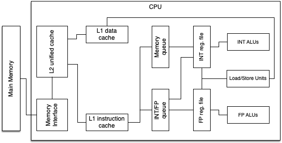
Figure 3: A simplified block diagram of a typical single core CPU
Figure 3 shows a simplified block diagram of a modern CPU. The computation in a CPU is completed by the floating-point and integer ALUs. The rest of the CPU is administrative logic that feeds those units with operands. The floating-point and integer registers hold operands to be accessed by the instructions, and the load and store units move data from cache to these registers. Memory is streamed from main memory into these caches. In a multi-core chip, some of the components may be shared by many cores (for example a shared cache).
Up to around 2006, the performance of a CPU like this was heavily dictated by Moore’s law and Dennard scaling.
Dennard scaling states roughly that, as transistors get smaller, their power density stays the same; while Moore’s law states that transistor density doubles approximately every 24 months. This doubling of transistor density meant that CPU performance doubled approximately every two years within a similar power envelope.
Together, these laws led to a period known as the “Free Lunch”, where rising clock speeds delivered regular performance increases with no additional power cost.
The breakdown of this inverse relationship around 2006 has meant that CPU manufacturers have increasingly focussed on multicore CPUs and architectural optimisations, rather than increases in clock speed. A multitude of architectural concepts have been developed including:
- Pipelining functional units
- Superscalar architectures
- SIMD instructions
- Out-of-order execution
- Increased cache sizes
- Simplified instruction sets
Common CPU Features
Pipelining
Pipelining is perhaps the most important architectural innovation in the development of CPUs; it was even present in the Cray-1, where vectors were processed using pipelining, rather than multiple ALUs.
Complex operations (like floating point addition and multiplication) are divided into simple subcomponents that can be executed on separate units simultaneously to increase instruction throughput. While a complete instruction might take more than a single clock cycle, if operands are optimally pipelined, we can often achieve a throughput of one instruction per cycle.
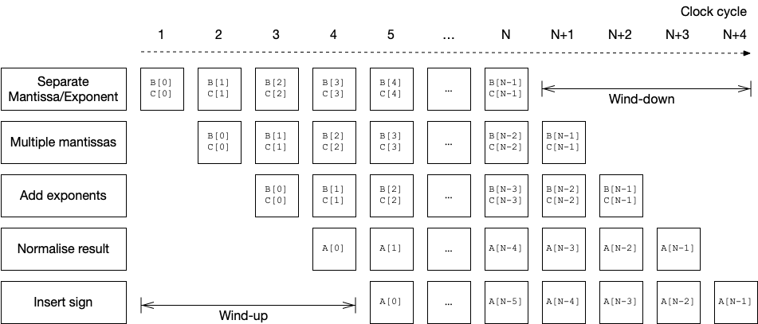
Figure 4: Timeline for a simplified vector multiplication
Figure 4 shows a timeline for a simplified floating-point vector multiplication (i.e. A[0:N] = B[0:N] * C[0:N]). After an initial wind-up period (latency of pipeline), one result is generated each clock cycle. A pipeline is perhaps the simplest form of Instruction-level Parallelism (ILP). In modern CPUs there may be more than 30 pipeline stages.
Superscalar Architectures
“Direct” instruction-level parallelism is provided by superscalarity. In a superscalar architecture, a CPU is typically able to achieve an instruction throughput greater than one per clock cycle. This requires multiple functional units (possibly identical) that can operate concurrently.
A superscalar architecture must be designed such that:
- It can fetch and decode multiple instructions concurrently
- It can execute multiple floating-point pipelines in parallel
- Caches are fast enough to sustain multiple load/store operations per clock cycle
Exploiting superscalarity is very difficult and often requires careful optimisation by the compiler. Consequently, some applications resort to writing code directly in assembly in order to achieve the highest number of instructions per clock cycle.
SIMD Instructions
Previously we have discussed vector processors, such as the Cray-1, where the same instruction can be applied to a vector of multiple items. In this way, CPUs can achieve data parallelism.
While SIMD execution was common in vector supercomputers, it did not make its way to the commodity market until 1996, when Intel’s MMX instructions were added the their x86 architecture. SIMD is now a common feature in desktop and server CPUs.
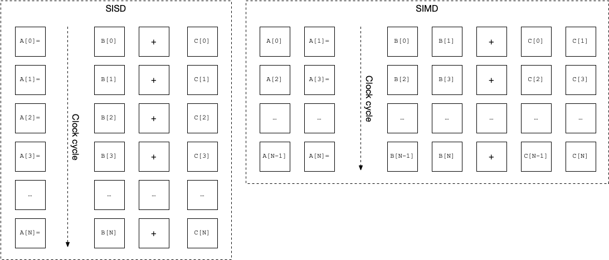
Figure 5: SISD vs SIMD (with width 2)
The MMX instruction set has since been superseded by the SSE and AVX instruction sets on Intel’s hardware. Each new generation of SIMD extensions brings new vectorised instructions, and ever increasing vector widths. Most modern Intel CPUs now implement the AVX-512 instruction set, with 512-bit vector registers. This allows instructions to operate on up to 8 double-precision (64-bit) floating-point values simultaneously.
We will look more closely at SIMD instruction sets in Unit 4.
Out-of-order execution
When a CPU is executing instructions in its instruction stream, it is often the case that the operands for some instructions are not present in registers at the required time. Out-of-order execution prevents this situation causing a stall (or idle time), by executing non-dependent instructions out of order. If a later instruction has its operands available, it can be executed ahead of time while the memory subsystem loads the operands required for the current instruction. Modern CPUs can keep hundreds of instructions in flight at any given time using a reorder buffer, to minimise processor stalls.
Memory hierarchies
Modern computers contain a hierarchy of memory, with each layer decreasing in size and increasing in performance (and cost!).
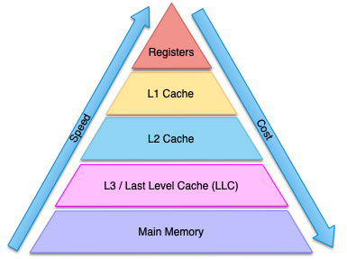
Figure 6: The memory hierarchy
Smaller, faster, on-chip memories serve as temporary data storage for holding copies of data that is soon to be used, bridging the performance gap between modern CPUs and main memory. A CPU typically only interacts with data in the registers, with data moved through the levels of cache as required. CPUs will attempt to “guess” which memory locations are likely to be required and will prefetch data ready for subsequent instructions. Should a prefetch prove incorrect, a cache miss is triggered, causing the CPU to stall. Ensuring applications operate in a cache-efficient manner is vital for high performance.
Modern CPUs typically have 3-4 levels of cache prior to main memory, and some of these levels of cache are shared between multiple cores. Recognising the growing gap between main memory performance and CPU performance, some manufacturers are introducing new levels to the memory hierarchy, such as high bandwidth memory (HBM). The size and speed of the caches must be carefully considered when designing a processor, since they occupy significant space on the processors themselves, and their cost increases as their performance and size increases.
RISC architectures
As computers and supercomputers developed, so too did the instruction sets upon which they relied. Throughout the early development of computers, these instruction sets grew progressively more complex, with single instructions responsible for loading values from memory, performing a mathematical or logical operation, and then storing the result back in memory. These Complex Instruction Set Computers (CISC) were, themselves, growing increasingly complex and required a significant hardware effort to decode and execute each instruction.
In the 1980s, there was a general move towards Reduced Instruction Set Computers (RISC). These RISC architectures typically featured a very simple instruction set that could be executed rapidly. This increased the burden on programmers (who now had to write many more instructions to perform the same tasks), but meant that processors could be simplified in such a way that their performance could be optimised much more readily.
Today, almost all CPUs use a RISC architecture at the lowest-level. Even though x86 is considered a CISC architecture, instructions are translated to RISC-like micro-ops on-the-fly.
Multicore and Multithreaded CPUs
In recent years, due to the breakdown of Dennard scaling, CPU manufacturers have instead focussed on maintaining Moore’s law through multicore designs. Typically a CPU will feature multiple cores, where each core has a mixture of its own execution units and some shared execution units, alongside dedicated registers and a mixture of dedicated and shared caches.
For example, an Intel Xeon Silver 4114 “Skylake” contains 10 cores, where each core has a 32 KiB L1 instruction cache, a 32 KiB L1 data cache, a 1 MiB L2 cache, and a shared 13.75 MiB L3 cache.
Additionally, each core is capable of simultaneously executing two threads. The complex pipelines on modern CPUs mean that it is often the case that there are gaps in the pipeline that are otherwise wasted. To harness the performance that would otherwise be wasted, modern CPUs are usually capable of simultaneous multi-threading (SMT), whereby multiple threads can be executing concurrently on a single core to maximise pipeline usage. However, SMT cannot improve single-thread performance, and can lead to decreased performance if there is contention for some of the pipelined units.
Further Reading
Modern CPU Architectures
x86 and x86_64
x86 is a family of microprocessor architectures initially developed by Intel. The architectures origins are in the 16-bit Intel 8086, released in 1978. Intel’s first 32-bit architecture was released in 1986 with the Intel 386 (released as the 80386). The 386 saw widespread adoption and was present in many of the workstations and personal computers of the time.
The 64-bit instruction set, x86_64, was first released in 1999 and was originally created by AMD. This architecture is now widely implemented in CPUs from Intel and AMD that are present in the majority of personal computers, and supercomputers today.
Over the years, many additions and extensions have been made to the instruction set, including (but by no means limited to):
- x87 floating-point instructions
- MMX, SSE (Streaming SIMD Extensions), SSE2, SSE3, SSE4, SSE 4.1, SSE 4.2
- AVX (Advanced Vector eXtensions), AVX2, AVX-512, AVX19, APX (Advanced Performance eXtensions)
- Cryptographic instructions
Depending on how you count, the x86_64 architecture now contains somewhere between 1000 and 4000 instructions.
Further Reading
PowerPC and Power
The PowerPC RISC architecture was created by an alliance of Apple, IBM, and Motorola in 1991 (and based on an earlier IBM Power instruction set architecture (ISA)). The PowerPC ISA was well known for being the architecture of choice in Apple Mac systems up to their switch to Intel x86 CPUs in 2006.
Since 2006, the PowerPC ISA has been named the Power ISA and has been developed by the OpenPOWER foundation, led by IBM. Since Apple’s switch away from Power architectures, the ISA is now mostly found in supercomputers, rather than commodity systems.
The BlueGene/L, /P, and /Q all used low-power multicore PowerPC architectures, and the #2 and #3 (in 2021) supercomputers made use of IBM Power9 architectures alongside NVIDIA accelerator devices.
Arm
The ARM family of architectures first emerged in 1985, with the ARM1 processor. The ARM1 was developed by Acorn Computers and adopted as a second processor in the BBC Micro. Following multiple iterations of the ARM architecture, in the late 1980s, Advanced RISC Machines was spun off from Acorn to continue development of the ARM architecture.
In contrast to Intel, AMD, and IBM, ARM do not fabricate their own processors, and instead licence the architectures to other companies. This business model has proven particularly successful in the smartphone market, where over 90% of all mobile phones use at least one ARM processor.
In recent years, ARM has emerged as a serious competitor in both personal computing and supercomputing. In 2020, Apple adopted the ARM architecture in their Apple M1 processors, now found in all new Apple Mac computers, and in 2018, Astra became the fastest ARM-based supercomputer in the Top500, with a performance of 1.529 PetaFLOP/s. This was subsequently followed by Fugaku reaching #1 in 2020 with the ARMv8-based A64FX architecture.
Further Reading
Calculating Performance (in FLOP/s)
So, now we know the basics of how modern CPUs work, how do we calculate the theoretical peak floating point performance?
First, we make a basic assumption that in the best case we can perform 1 instruction per clock cycle. Of course, most instructions take multiple clock cycles, but (in the best case) we hope that these are amortised by superscalar architectures, pipelining, etc.
Then we can consider the number of FLOP/s we can perform per instruction. If we consider a Fused Multiply-Add (FMA) instruction (e.g. $a = a + (b \times c)$), we can perform 2 FLOP/s per instruction (i.e. an addition and a multiplication). Add in SIMD instruction sets and we can perform multiple FMA instructions simultaneously on a vector of inputs. With AVX, with a vector width of 128 bits, we can perform 2 double-precision (64-bit) FMA instructions per clock cycle; with AVX-2, we can double this to 4 double-prevision FMA instructions per cycle, and with AVX-512, we can double this again to 8.
Next, we must consider whether there are multiple floating point units per core. In many cases, there will only be a single unit available, but in some HPC processors, we may be able to use simultaneous multithreading (SMT) to increase performance. A good example of this is in the Intel Xeon Gold 6252 processor, where “# of AVX-512 FMA Units” is 2 (i.e. there are 2 AVX-512 FMA units available for each core).
Finally, we must consider the number of cores on a CPU, and multiply all of these numbers together.
For the Intel Xeon Gold 6252 the equation would be:
\[\begin{align*} {\rm FLOP/s} & = 2.1G~\textrm{(processor frequency)} \\ & ~ \times 2~\textrm{(FMA)} \\ & ~ \times 2~\textrm{(FMA Units per core)} \\ & ~ \times 8~\textrm{(AVX-512)} \\ & ~ \times 24~\textrm{(cores)} \\ & = 1612.8~\textrm{GFLOP/s} \end{align*}\]For an older processor, like the Intel Xeon E5-2698 v4, the equation would be:
\[\begin{align*} {\rm FLOP/s} & = 2.2G~\textrm{(processor frequency)} \\ & ~ \times 2~\textrm{(FMA)} \\ & ~ \times 4~\textrm{(AVX2)} \\ & ~ \times 20~\textrm{(cores)} \\ & = 352~\textrm{GFLOP/s} \end{align*}\]Of course, achieving this level of performance with either of these processors relies on all data being resident in processor registers and L1 caches, and that the instruction balance is purely FMA instructions. It is not unusual that we achieve a small percentage of peak performance in real codes. And this is becoming increasingly difficult as processors become more complex!
Exercise
Find out what CPU your current computer contains. Look up its information on Intel Ark (or wikichip, or an alternative (if not an Intel core)). Calculate its peak FLOP performance.
Distributed System Interconnects
Distributed systems come in many different sizes and configurations. Cloud-based distributed systems are typically capacity systems, whereby they are trying to solve many small problems simultaneously. Supercomputers are usually capability systems, whereby they are trying to solve a few very large problems in parallel. In both cases, compute nodes require communication to coordinate tasks and potentially share information.
In this section we will cover some of the interconnects that are used to provide this communication channel. We will discuss the kinds of data that flow over these communication channels in a later unit.
The Internet and Ethernet
Geographically distributed systems (e.g. the cloud) typically operate within a data centre, or within multiple, connected data centres. Within these data centres nodes are typically connected via Ethernet, and connections between data centres usually take place over fast (optical) internet connections.
Cloud systems typically require the ability to be “elastic”, i.e., to grow and shrink capacity on demand. Because of this, nodes may be separated considerably. Ethernet provides high-bandwidth between nodes (even over large distances), but with an associated high latency.
High Speed Interconnects
Most HPC systems today are distributed memory architectures, where each node operates independently on a subproblem, with a communication phase each time step, to communicate boundary information, or to perform simple reduction calculations. Communications are typically small, but time sensitive. Because of this, there is a focus in HPC on low-latency interconnects.
All modern networks are switched fabric – nodes communicate through one of more network switches (particularly crossbar switches).
Infiniband
Infiniband originated in 1999 from a merger of Next Generation I/O (Intel, Sun and Dell) and Future I/O (Compaq, IBM and HP). Infiniband is a switched fabric topology focussed on low latency, that was originally designed to replace PCI.
In infiniband, the physical connections can be made with copper (up to 10 meters) or optical fibre (up to 10 km), and links can be aggregated to achieve higher bandwidth.
The initial release of infiniband was single-data rate (SDR) with a theoretical throughput of 2 Gbit/s per link, and an adapter latency of 5 $\mu$s. Subsequently this has been extended to double-data rate (DDR), quad-data rate (QDR), fourteen-data rate (FDR), enhanced-data rate (EDR) and high-data rate (HDR), with each update increasing the throughput, up to 50 Gbits/s per link, and reducing the latency to around 0.5 $\mu$s.
| SDR | DDR | QDR | FDR10 | FDR | EDR | HDR | ||
|---|---|---|---|---|---|---|---|---|
| Signalling rate (Gbit/s) | 2.5 | 5 | 10 | 10.3125 | 14.0625 | 25.78125 | 50 | |
|
Theoretical effective throughput (Gb/s) |
for 1 link | 2 | 4 | 8 | 10 | 13.64 | 25 | 50 |
| for 4 links | 8 | 16 | 32 | 40 | 54.54 | 100 | 200 | |
| for 8 links | 16 | 32 | 64 | 80 | 109.08 | 200 | 400 | |
| for 12 links | 24 | 48 | 96 | 120 | 163.64 | 300 | 600 | |
| Adapter latency ($\mu$s) | 5 | 2.5 | 1.3 | 0.7 | 0.7 | 0.5 | <0.6 | |
Table 1: Signalling rate, bandwidth, and latency for various Infiniband specifications.
By 2014 it was the most commonly used HPC interconnect in the Top500, before being displaced by 10 Gbit/s ethernet in 2016.
Ethernet
Ethernet is a family of wired networking technologies that were introduced in 1980, and first standardised as IEEE 802.3. The original specification used coaxial cables as a shared medium and could operate at approximately 3 Mbit/s. Today, Ethernet is the dominant networking technology in homes, work places and data centres.
Since the initial release of the IEEE 802.3 specification, Ethernet has evolved considerably. New protocols, advances in physical connectors, and the introduction of network switches has meant that Ethernet can now offer bandwidth in excess of 100 Gbit/s (Terabit Ethernet, TbE was specified in IEEE 802.3bs).
The widespread adoption of Ethernet (and therefore the huge variety of use cases) necessitates a “fat stack”, and therefore it is unlikely standard Ethernet will be able to compete with Infiniband in terms of latency. However, it is still used widely on HPC system due to its greater bandwidth and lower cost.
Further Reading
Recently, an HPC-specific Ethernet stack has been developed by HPE-Cray for use in their Slingshot Interconnect. The HPC Ethernet protocol brings low latency and low packet overhead to the Ethernet protocol, but only between specific Cray hardware (i.e. Cray NICs and Rosetta switches).
Further Reading
- Daniele De Sensi, Salvatore Di Girolamo, Kim H. McMahon, Duncan Roweth, and Torsten Hoefler. 2020. An in-depth analysis of the slingshot interconnect. In Proceedings of the International Conference for High Performance Computing, Networking, Storage and Analysis (SC ‘20). IEEE Press, Article 35, 1-14.
Toplogies
The performance of the interconnect in a distributed system is primarily dictated by the hardware in use and the topology (i.e. how nodes are connected to each other). While it would perhaps be most performant to connect each node to every other node through a single switch this is impractical for even small-to-medium sized clusters, and so typically some form of hierarchical topology must be used.
Fat Tree
Fat trees are shaped similarly to a tree, and have root switches and leaf switches (see Figure 7). Typical implementations are 2 or 3 level and may be tapered between the root and leaf switches, reducing cost and increasing the number of available endpoints but at the expense of global bandwidth.
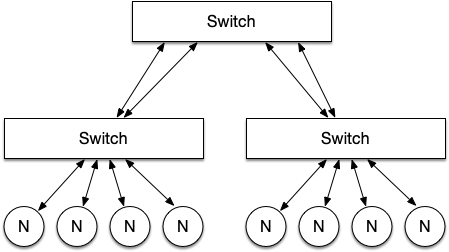
Figure 7: A simple 2-level fat-tree configuration
In a fat tree, the worst case hop count can be calculated by:
\[\textrm{Worst case hop count} = 2 \times \textrm{Number of levels} - 1\]If the left most node and the right most node want to communicate then it must go through each layer up and down in the tree but only hits the root switch once, this is only considered as 1 hop (i.e. it would take 3 hops).
Torus
A torus is a multidimensional topology based upon a mesh or a cube network (k-ary n-mesh/cube network).
Figure 8 shows a 2D torus, in a 3 × 3 grid; a switch (s in the figure) can then have multiple nodes attached.
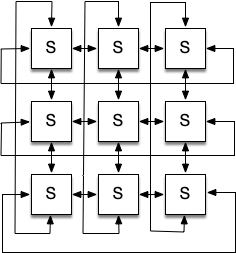
Figure 8: A 3 x 3 torus network
Torus interconnects are typically very high performance, with a minimal number of hops required between any two compute nodes. However, this comes with an associated financial cost. Recent examples of Torus interconnects can be found in systems such as the IBM BlueGene systems, and the Japanese K-Computer and Fugaku systems.
Dragonfly
Dragonfly is a network topology designed by Cray, that can be more cost effective for more endpoints than a Fat-Tree. Networks based upon a Dragonfly are grouped in to three ranks, firstly the router, secondly an intra-group, and thirdly inter-groups. Figure 9 shows four nodes per router and three routers per group configuration with one global link per router for inter-group communication. The design of inter-group networks are left to the implementer, and in the case of Cray Aries this is an All-to-All 2D mesh.
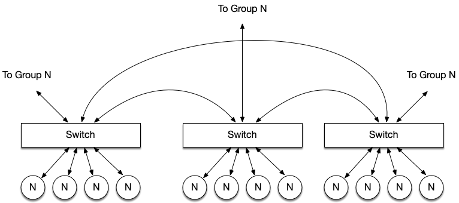
Figure 9: A simple dragonfly topology
The Aries implementation of a Dragonfly topology uses 4 nodes to 1 router and 96 routers per group connected as an All-to-All mesh electrically; the inter-group connections are optical and can be tapered to reduce cost.
The average hop count for a Dragonfly is 5, this is where the node needs to communicate with a node from another group. The worst case could be higher than a fat tree for a sufficiently large network because the adaptive routing could make the data travel over multiple routers.
Like Aries, the more recent Cray Slingshot interconnect defaults to a Dragonfly topology.
Further Reading
- Daniele De Sensi, Salvatore Di Girolamo, Kim H. McMahon, Duncan Roweth, and Torsten Hoefler. 2020. An in-depth analysis of the slingshot interconnect. In Proceedings of the International Conference for High Performance Computing, Networking, Storage and Analysis (SC’20). IEEE Press, Article 35, 1-14.
- Introduction to High Performance Computing for Scientists and Engineers, Chapter 4
Parallel Storage
Networked File Systems
The Sun Network File System
The Sun Network File System (NFS) is perhaps the most well known and most widely used file system that provides a unified directory structure to a collection of clients over a network. It uses Sun’s Remote Procedure Call (RPC) protocol in order to allow clients to issue file system commands across the network.
The first public release of NFS (NFSv2) operated using UDP, a stateless protocol. Consequently operations such as a write had to be completed synchronously, whereby the server would have to perform the complete operation before it could return a result to the client. Stateless operation also restricted the use of file locking (vital for a file system where many clients may be acting independently), and this therefore had to be implemented outside of the core protocol. Support for TCP was added in NFSv3, but a stateful protocol was not added until NFSv4.
NFS is widely used on many home and business networks, often in conjunction with credential and security protocols such as LDAP and Kerberos. NFS can also be found on a number of distributed systems, where NFS typically provides a “home” space for users, while computations are performed to scratch space on high performance parallel file systems.
Besides NFS, there are a number of alternative protocols such as Server Message Block (SMB) and Apple Filing Protocol (AFP) that provide similar features.
Distributed File Systems
While protocols such as NFS provide a unified storage solution for many connected nodes, the performance of these file systems typically do not scale with the size of the network. For this reason, distributed file systems (DFS) exist to provide a unified storage space across a network of servers. As a DFS is spread across multiple servers (allowing parallelised access without interprocess interference) it generally provides a greater quality of service (QoS) than a networked file system.
The IBIS file system, developed in 1985, was one of the first DFSs where the file system was spread across all nodes of the network, allowing all nodes to transparently access any file regardless of whether the file was stored locally or remotely. Modern DFSs now require dedicated storage servers, each themselves containing high performance storage backends (using techniques such as RAID).
In most modern DFSs, there are four components. For the purpose of this unit we will adopt the naming convention from the Lustre file system (described below); different file systems may use alternate terms but the functions they provide are largely equivalent.
- Object Storage Targets (OST) HDDs are usually grouped using RAID (to improve performance and provide some redundancy), these are then referred to as Object Storage Targets. The OSTs are used to store the stripe data blocks that make up each file.
- Object Storage Servers (OSS) One or more OSTs are connected to one or more Object Storage Servers. The OSSs are directly responsible for reading and writing file data from and to the OSTs.
- Metadata Server (MDS) Metadata (such as the directory tree, file permissions and file block locations) is either stored on a dedicated Metadata Server or is stored on the OSSs (as in IBM Spectrum Scale). The MDS is used by the clients to get file information and file structure, such that they can access the file stripes stored on the OSTs.
- Management Server (MGS) Finally, there are usually one or two Management Servers holding the server configurations.
Lustre
The Lustre file system is used by many of the world’s fastest and largest computers. The basic architecture of a Lustre file system is shown below. Although Lustre (up to version 2.4) uses only a single MDS, a fail-over MDS and MGS can be present. Additionally, multiple OSSs can be connected to common OSTs and this will again provide some fail-over capability.
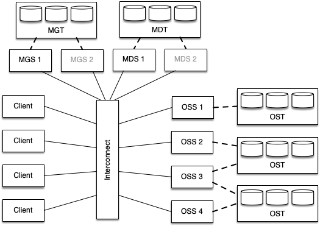
Figure 10: Simplified example configuration of a Lustre file system
Lustre makes use of file striping to allow load to be distributed across a number of service nodes. The size and width of each stripe (where the width is the number of servers over which to stripe) can be configured on a per-file or per-directory basis. The lfs command can be used to view and modify these settings.
When writing to a Lustre system, the server used for the first stripe is randomised in order to provide some load balancing between different clients. From this point onwards, the data is striped across a number of servers based on the configured stripe width.
To maintain consistency and allow correct concurrent access to the DFS, Lustre makes use of a distributed lock manager. Each OSS maintains its own file locks and so if two processes attempt to access the same chunk of a file, the OSS will only grant a lock to one of the clients (unless both accesses are read requests).
IBM Spectrum Scale
IBM’s Spectrum Scale file system (formally known the General Parallel File System (GPFS)) operates similarly to Lustre; large files are distributed across multiple storage targets using stripes. However, Spectrum Scale differs from Lustre in that all OSSs are connected to all OSTs and MDTs, usually through a fibre channel switch. This provides additional resilience in that many more OSSs can fail before the file system must go offline. Figure 11 demonstrates an example Spectrum Scale configuration.
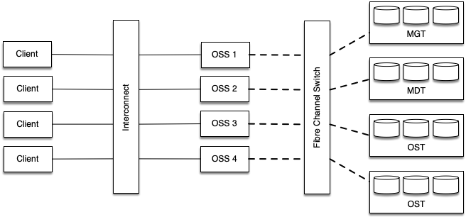
Figure 11: Simplified example configuration of a Spectrum Scale file system
Metadata is maintained by all servers, potentially providing better performance for metadata intensive workloads. Although it is possible to store metadata on the same disks as file data, many installations make use of dedicated higher performance (but smaller) targets for metadata.
Spectrum Scale makes use of a much smaller stripe size than Lustre (typically 16 KB or 64 KB) and sets the stripe width adaptively. For large parallel writes, data can be striped across all available servers, potentially providing a much greater maximum bandwidth.
Computational Accelerators
Many of the newest, largest, and fasted HPC systems are heterogeneous systems, with compute provided by two or more different computational architectures. While this seems to be a new trend in supercomputing, the first supercomputer discussed in the previous unit (and previously in this unit) was heterogeneous in nature.
You may recall that the CDC 6600 used a simplified CPU that was supported by a number of peripheral processors; these peripheral processors were able to perform additional work in the background, freeing up computational resources for mathematical operations. We would now consider such a system to be “heterogeneous”.
Modern Heterogeneous Computing
The modern era of accelerated computing arguable began with the first Petascale system, IBM Roadrunner.
IBM Roadrunner was an AMD Opteron powered system with IBM PowerXCell 8i accelerators connected to each core.
The hybrid design of Roadrunner required that applications be written specifically to make use of the PowerXCell accelerator devices in order to achieve the highest possible performance. This complicated the development process, but the accelerators provided the vast majority of the available computational power of the machine.
Further Reading
The important difference to notice between CPUs and accelerator architectures (such as GPUs) is that accelerators are very simple, since they do not require the complex control logic required to orchestrate an entire system. Because of this, much more of the silicon can be dedicated to arithmetic logic units (ALUs), or fast on-board memory. Accelerators typically contain hundred or thousands of simple ALUs that can perform floating-point operations in parallel on wide vectors of data.
In an accelerated system, computations that are “offloaded” to the accelerator usually begin with a data transfer over a PCIe bus (or similar) into the accelerators memory space, followed by the execution of a computational “kernel”, before the resultant data is transferred back to the host device.
Figure 12 highlights some of the key computational differences between CPUs and GPUs (but this applies to almost all accelerators).
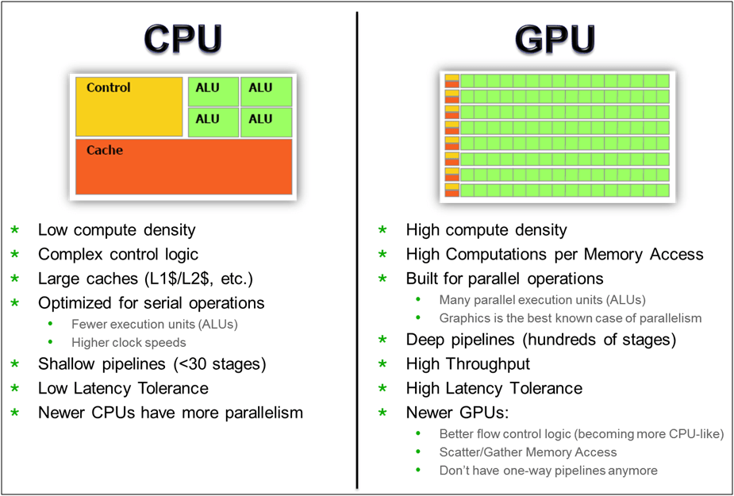
Figure 12: CPUs vs GPUs for computation
Further Reading
GPGPUs
GPUs have been present in some computing systems since the 1970s (e.g. arcade video games). In early systems, the GPU was largely responsible for moving data between RAM and the frame buffers.
As computational processing power has increased over the subsequent decades, so too has the complexity of GPUs. Initially GPUs were limited to rendering simple images constructed from 2D shapes, but modern GPUs can now construct high resolution 3D images, applying a large number of image processing algorithms to create realistic environments.
Perhaps the biggest step in the evolution of General-purpose computing on GPUs (GPGPUs) was when programmable shaders were introduced by NVIDIA in the GeForce 3. Now, each pixel or vertex could be processed by a short program to calculate what would be displayed on the screen.
These programmable shaders were the focus of the Brook programming language, developed at Stanford University in the early 2000s. BrookGPU was a compiler and runtime implementation of the Brook stream programming language aimed at using programmable shaders to perform floating-point calculations on a GPU alongside a CPU.
In 2007, inspired by Brook, NVIDIA created the CUDA (Compute Unified Device Architecture) programming language – a C-like programming language aimed at programming NVIDIA GPUs not for visual output, but for parallel computation. While a GPU lacks much of the functionality required to operate an entire operating system, they can perform many floating-point operations in parallel when data and instructions are provided in a SIMD-like fashion.
GPUs began to take a footing in the Top500 list from June 2010, with two systems appearing in the top 10 powered partially by NVIDIA or ATI Radeon GPUs. From these humble beginning, many of the largest systems are now powered by NVIDIA GPUs, and a number of planned Exascale systems will use GPUs from AMD (formerly ATI) and Intel.
Currently applications must use alternative programming models (like CUDA or HIP) to target the GPU devices, or use compiler directives (or new programming models, such as those that will be discussed in a later unit). Data has to be transferred to the GPUs (usually over a PCIe bus), before the compute is offloaded, and the result transferred back to main memory. We’ll look at how to program GPUs later in the course.
Further Reading
Co-processors
The use of GPUs in HPC systems has grown enormously over the last decade, but as discussed above, computational accelerators are nothing new in distributed systems. Accelerators such as the IBM PowerXCell accelerator are essentially co-processors – processors designed to supplement the functions of the CPU.
One example of a co-processor that predates the PowerXCell processors was developed in Bristol by ClearSpeed. The ClearSpeed CSX600 processors helped the Tsubame cluster reach #7 in the TOP500 in 2006, two years prior to Roadrunner’s launch.
A more recent example of a co-processor grew out of Intel’s cancelled GPU design – codenamed “Larrabee”. Ultimately launched in 2010, the Intel Xeon Phi product range saw considerable success in the TOP500 before its discontinuation in 2020.
The Xeon Phi was initially delivered as a PCIe connected accelerator card with many low-power, low-clock speed parallel cores that implemented the full x86-64 instruction set, alongside wide SIMD instructions (e.g. AVX-512). The Tianhe-2 supercomputer used Intel Xeon Phi “Knights Corner” co-processors to reach #1 in 2013. The Xeon Phi range has subsequently been discontinued, with Intel instead focussing on their new Xe GPUs, as used by the Aurora Exascale system.
The current TOP500 contains a number of other accelerators, primarily developed in Asia, such as the Matrix-2000 accelerator, the MN-Core Deep Learning accelerator, and the PEZY-SC many-core processor. You can find out more about these accelerators on WikiChip.
HPC Systems
This unit has covered each of the “major” constituent parts of a supercomputer.
Modern day systems typically consist of a number of cores on each processor chip, and a number of processor chips on each motherboard. Many systems further employ accelerators (usually in the form of GPUs) on each node.
Each node is connected to its neighbours and other nodes in the system through an interconnect, and this interconnect may be hierarchical in nature, meaning nodes that are physically closer in a cabinet are likely to also be “closer” in terms of the communication latency.
A shared parallel file system is usually available for the system, such that nodes can each read and write data to a coherent storage medium.
On an HPC system, users typically interact with the system through login nodes. Users typically compile their applications on these login nodes, before submitting batch jobs to the queuing system. For cloud-based systems, users are much more likely to interact with individual nodes, with node instances being created on-demand.
Hopefully you can see that there is a wealth of diversity in HPC systems, and this diversity is growing. A cursory glance at the TOP500 lists over the past decade shows the explosion in architectural development that is currently occurring. Ensuring each of these HPC systems is used in the most effective way will be the focus for much of the remainder of this module.
Recommended Reading
- Introduction to High Performance Computing for Scientists and Engineers, Chapter 1 - Modern Processors
- Introduction to High Performance Computing for Scientists and Engineers, Chapter 4 - Parallel Computers